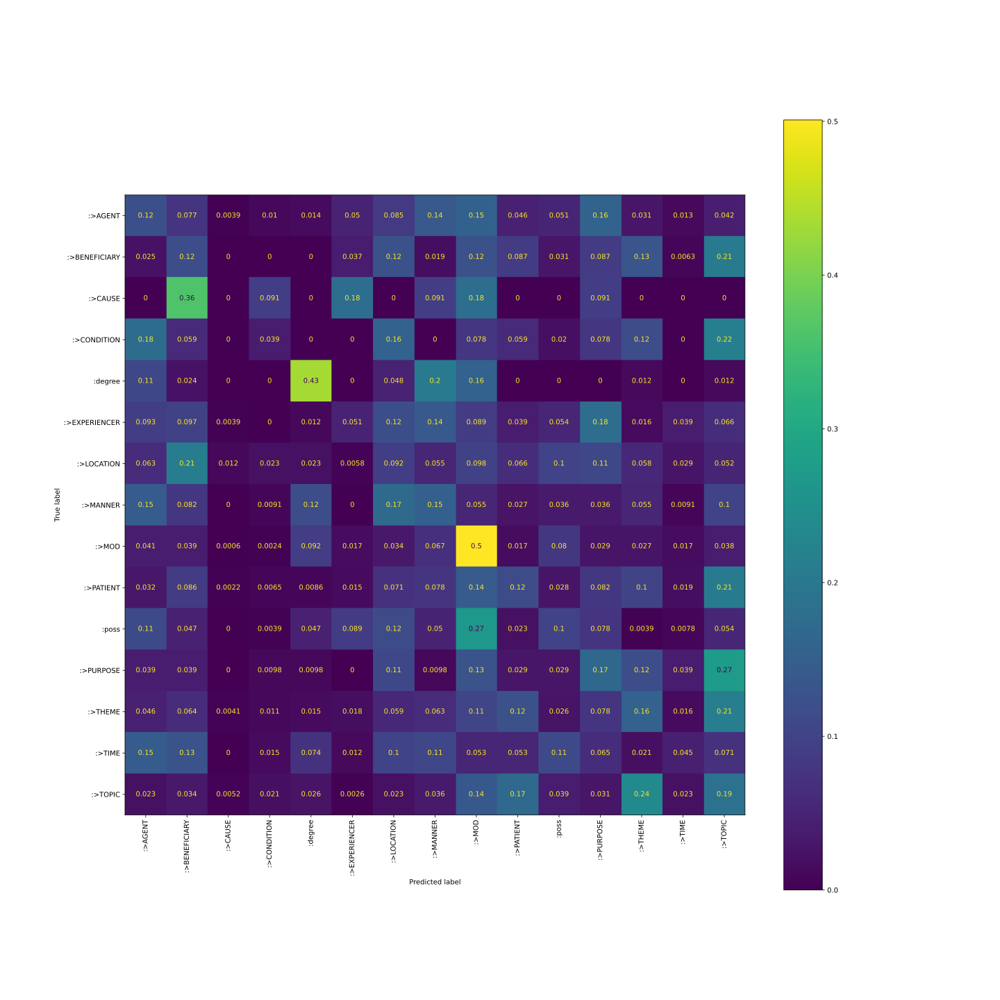
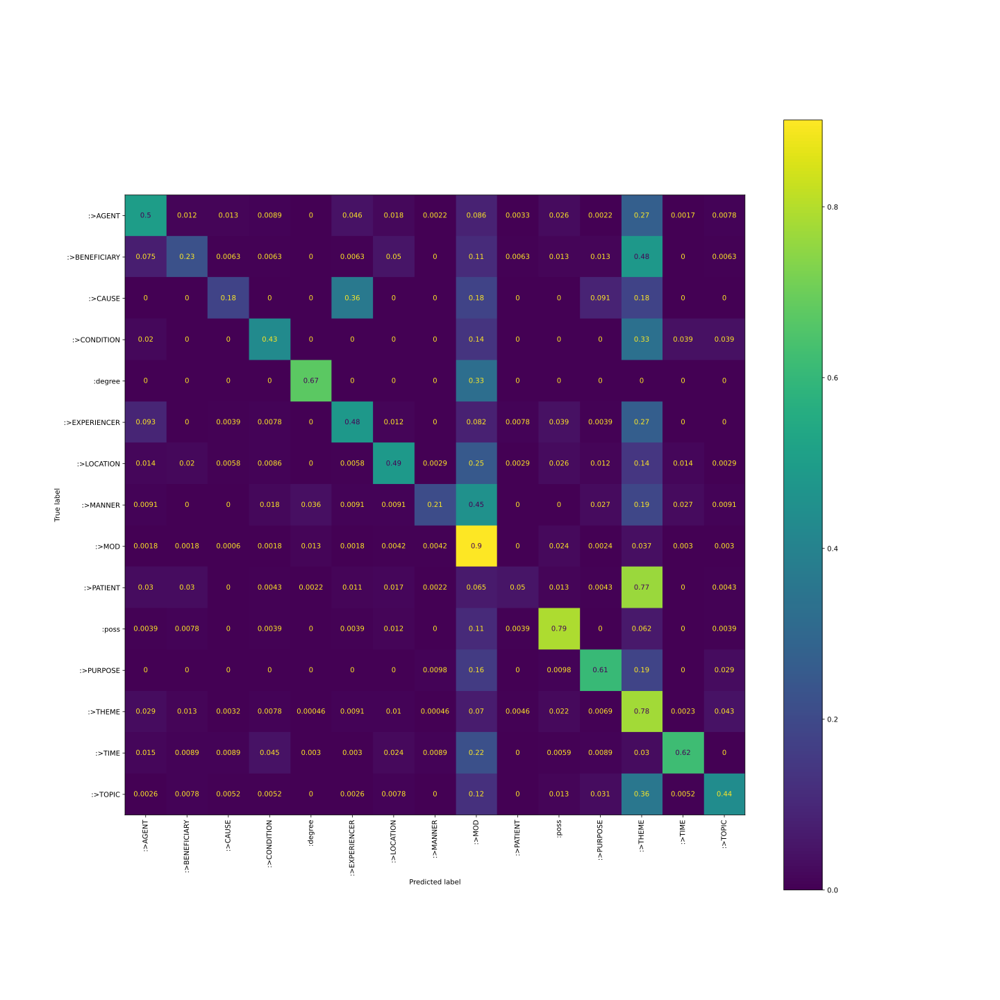
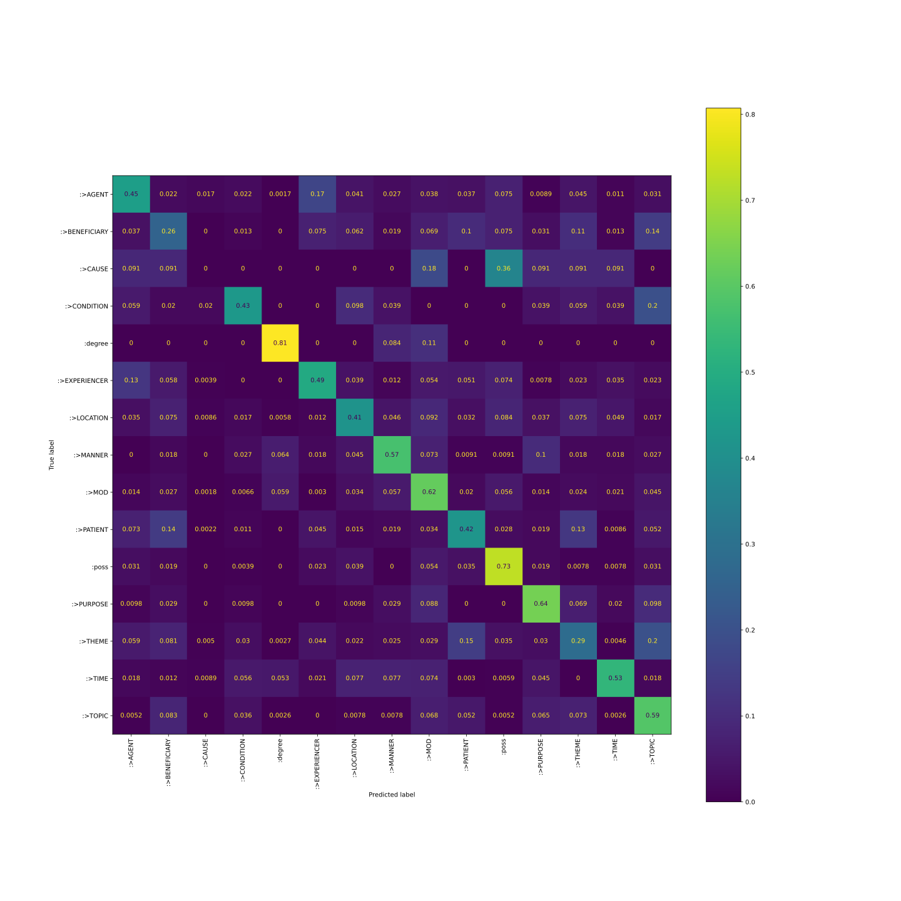
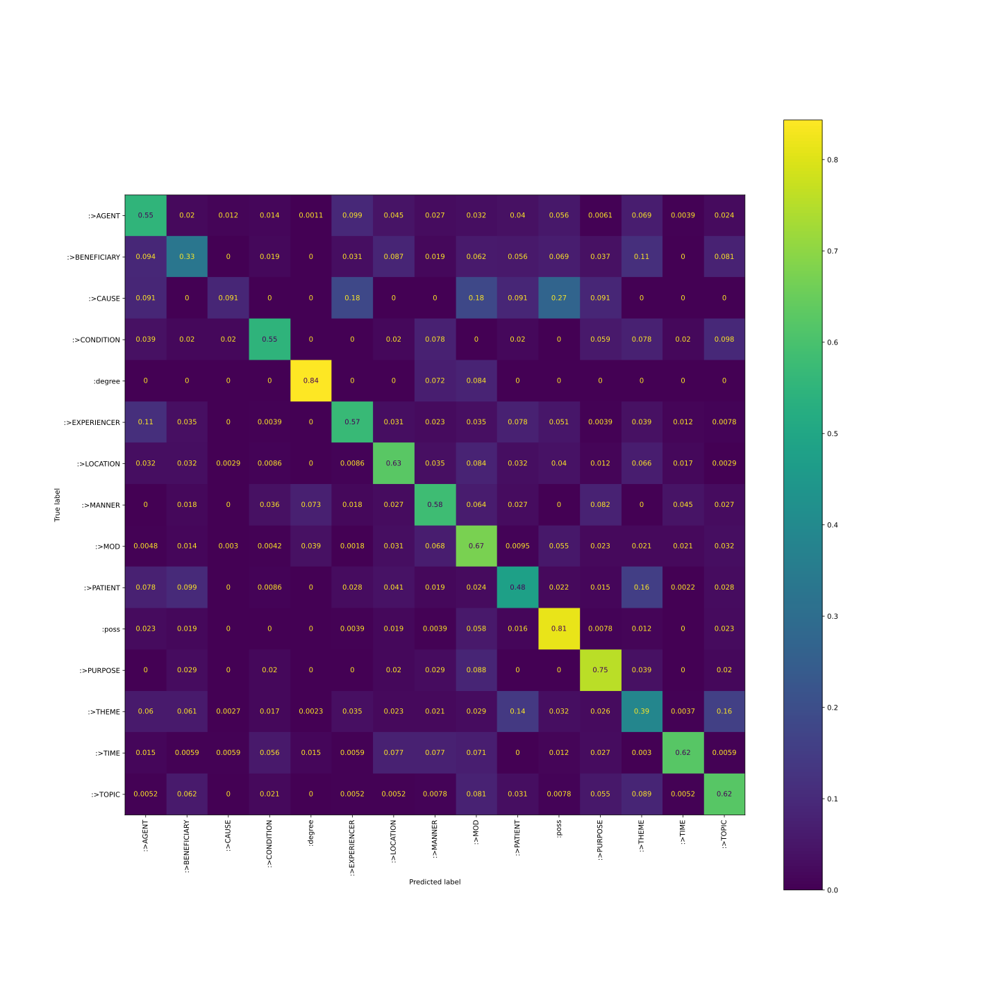
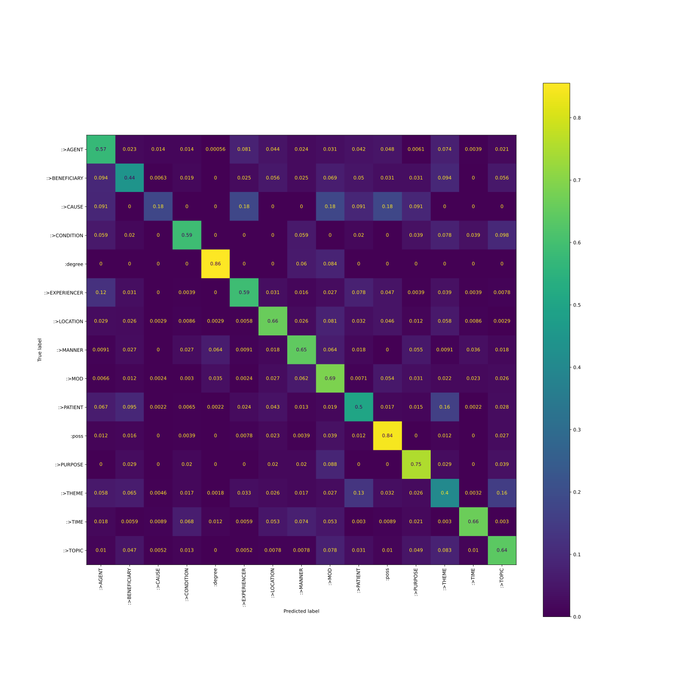
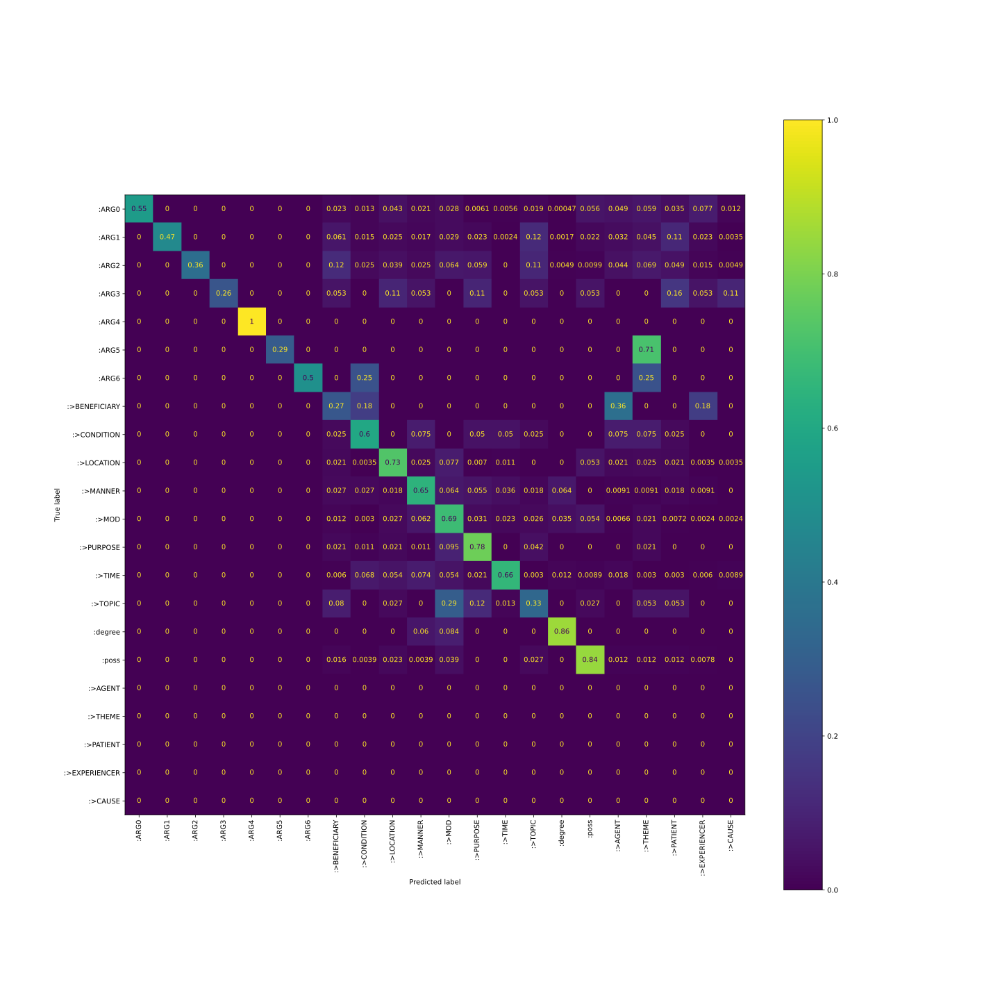
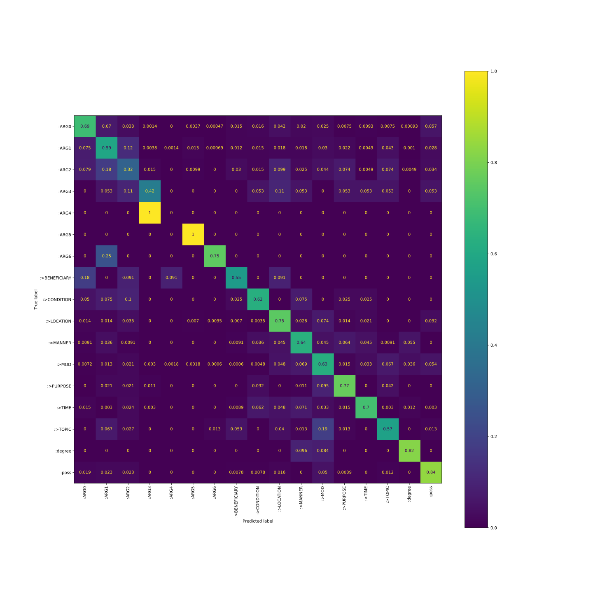

REPORT
Informations de reproductibilité
fonction batch_LM classe_modele <class 'modeles.Classif_Logist'> MD5_git 0018a2d9b029eaa5be17dd8eae53a2c9f7f1c6b7 chkpt_model /home/frederic/projets/detection_aretes/lightning_logs/version_6/checkpoints/epoch=1-step=7204.ckpt
paramètres d’instanciation
dim 288 nb_classes 15 cible roles freqs tensor([125958., 9372., 1573., 5234., 5625., 15584., 27017., 8205.,
94525., 29141., 16092., 5905., 149030., 31380., 19555.])
Dataset (classe et effectifs)
relations groupes effectifs :>AGENT :>AGENT 125958 :>BENEFICIARY :beneficiary :>BENEFICIARY 9372 :>CAUSE :>CAUSE 1573 :>CONDITION :condition :>CONDITION 5234 :degree :degree 5625 :>EXPERIENCER :>EXPERIENCER 15584 :>LOCATION :location :>LOCATION 27017 :>MANNER :manner :>MANNER 8205 :>MOD :mod :>MOD 94525 :>PATIENT :>PATIENT 29141 :poss :poss 16092 :>PURPOSE :purpose :>PURPOSE 5905 :>THEME :>THEME 149030 :>TIME :time :>TIME 31380 :>TOPIC :topic :>TOPIC 19555
Accuracy : 0.207756, balanced accuracy : 0.152401

(Image stockée dans Rapport_Logistique_PJ/PJ_647120.svg)
Informations de reproductibilité
fonction batch_LM classe_modele <class 'modeles.Classif_Logist'> MD5_git 6e884125a3faa9ff6e9981309a078cacd88cd80d chkpt_model /home/frederic/projets/detection_aretes/lightning_logs/version_0/checkpoints/epoch=99-step=360200.ckpt
paramètres d’instanciation
dim 288 nb_classes 15 cible roles lr 0.001 freqs tensor([125958., 9372., 1573., 5234., 5625., 15584., 27017., 8205.,
94525., 29141., 16092., 5905., 149030., 31380., 19555.])
Dataset (classe et effectifs)
relations groupes effectifs :>AGENT :>AGENT 125958 :>BENEFICIARY :beneficiary :>BENEFICIARY 9372 :>CAUSE :>CAUSE 1573 :>CONDITION :condition :>CONDITION 5234 :degree :degree 5625 :>EXPERIENCER :>EXPERIENCER 15584 :>LOCATION :location :>LOCATION 27017 :>MANNER :manner :>MANNER 8205 :>MOD :mod :>MOD 94525 :>PATIENT :>PATIENT 29141 :poss :poss 16092 :>PURPOSE :purpose :>PURPOSE 5905 :>THEME :>THEME 149030 :>TIME :time :>TIME 31380 :>TOPIC :topic :>TOPIC 19555
Accuracy : 0.633479, balanced accuracy : 0.491793

(Image stockée dans Rapport_Logistique_PJ/PJ_894652.svg)
Informations de reproductibilité
fonction batch_LM classe_modele <class 'modeles.Classif_Logist'> MD5_git e9322dad6d8e3169423c0bceddda1283b4541aa3 chkpt_model /home/frederic/projets/detection_aretes/lightning_logs/version_1/checkpoints/epoch=49-step=180100.ckpt
paramètres d’instanciation
dim 288 nb_classes 15 cible roles lr 1e-05 freqs tensor([125958., 9372., 1573., 5234., 5625., 15584., 27017., 8205.,
94525., 29141., 16092., 5905., 149030., 31380., 19555.])
Dataset (classe et effectifs)
relations groupes effectifs :>AGENT :>AGENT 125958 :>BENEFICIARY :beneficiary :>BENEFICIARY 9372 :>CAUSE :>CAUSE 1573 :>CONDITION :condition :>CONDITION 5234 :degree :degree 5625 :>EXPERIENCER :>EXPERIENCER 15584 :>LOCATION :location :>LOCATION 27017 :>MANNER :manner :>MANNER 8205 :>MOD :mod :>MOD 94525 :>PATIENT :>PATIENT 29141 :poss :poss 16092 :>PURPOSE :purpose :>PURPOSE 5905 :>THEME :>THEME 149030 :>TIME :time :>TIME 31380 :>TOPIC :topic :>TOPIC 19555
Accuracy : 0.461342, balanced accuracy : 0.482694

(Image stockée dans Rapport_Logistique_PJ/PJ_933378.svg)
Informations de reproductibilité
fonction batch_LM classe_modele <class 'modeles.Classif_Logist'> MD5_git 7837455b2424b56f37a3c8b41303aada2248a4de chkpt_model /home/frederic/projets/detection_aretes/lightning_logs/version_2/checkpoints/epoch=49-step=180100.ckpt
paramètres d’instanciation
dim 288 nb_classes 15 cible roles lr 1e-05 freqs tensor([125958., 9372., 1573., 5234., 5625., 15584., 27017., 8205.,
94525., 29141., 16092., 5905., 149030., 31380., 19555.])
Dataset (classe et effectifs)
relations groupes effectifs :>AGENT :>AGENT 125958 :>BENEFICIARY :beneficiary :>BENEFICIARY 9372 :>CAUSE :>CAUSE 1573 :>CONDITION :condition :>CONDITION 5234 :degree :degree 5625 :>EXPERIENCER :>EXPERIENCER 15584 :>LOCATION :location :>LOCATION 27017 :>MANNER :manner :>MANNER 8205 :>MOD :mod :>MOD 94525 :>PATIENT :>PATIENT 29141 :poss :poss 16092 :>PURPOSE :purpose :>PURPOSE 5905 :>THEME :>THEME 149030 :>TIME :time :>TIME 31380 :>TOPIC :topic :>TOPIC 19555
Accuracy : 0.548018, balanced accuracy : 0.566829

(Image stockée dans Rapport_Logistique_PJ/PJ_226549.svg)
Informations de reproductibilité
fonction batch_LM classe_modele <class 'modeles.Classif_Logist'> <class 'modeles.Classif_Logis…copier MD5_git abdb70e11fae52a75a080d0678117d5695b5da98 abdb70e11fae52a75a080d0678117…copier chkpt_model /home/frederic/projets/detection_aretes/lightning_logs/version_3/checkpoints/epoch=49-step=180100.ckpt /home/frederic/projets/detect…copier
paramètres d’instanciation
dim 288 nb_classes 15 cible roles lr 1e-05 freqs tensor([125958., 9372., 1573., 5234., 5625., 15584., 27017., 8205.,
94525., 29141., 16092., 5905., 149030., 31380., 19555.]) tensor([125958., 9372., 1…copier
Dataset (classe et effectifs)
relations groupes effectifs :>AGENT :>AGENT 125958 :>BENEFICIARY :beneficiary :>BENEFICIARY 9372 :>CAUSE :>CAUSE 1573 :>CONDITION :condition :>CONDITION 5234 :degree :degree 5625 :>EXPERIENCER :>EXPERIENCER 15584 :>LOCATION :location :>LOCATION 27017 :>MANNER :manner :>MANNER 8205 :>MOD :mod :>MOD 94525 :>PATIENT :>PATIENT 29141 :poss :poss 16092 :>PURPOSE :purpose :>PURPOSE 5905 :>THEME :>THEME 149030 :>TIME :time :>TIME 31380 :>TOPIC :topic :>TOPIC 19555
Accuracy : 0.569414, balanced accuracy : 0.602247

(Image stockée dans Rapport_Logistique_PJ/PJ_821052.svg)
[[1029, 41, 25, 25, 1, 145, 79, 44, 55, 76, 87, 11, 133, 7, 38], [15, 71, 1, 3, 0, 4, 9, 4, 11, 8, 5, 5, 15, 0, 9], [1, 0, 2, 0, 0, 2, 0, 0, 2, 1, 2, 1, 0, 0, 0], [3, 1, 0, 30, 0, 0, 0, 3, 0, 1, 0, 2, 4, 2, 5], [0, 0, 0, 0, 71, 0, 0, 5, 7, 0, 0, 0, 0, 0, 0], [31, 8, 0, 1, 0, 152, 8, 4, 7, 20, 12, 1, 10, 1, 2], [10, 9, 1, 3, 1, 2, 229, 9, 28, 11, 16, 4, 20, 3, 1], [1, 3, 0, 3, 7, 1, 2, 71, 7, 2, 0, 6, 1, 4, 2], [11, 20, 4, 5, 59, 4, 45, 104, 1153, 12, 91, 52, 37, 39, 43], [31, 44, 1, 3, 1, 11, 20, 6, 9, 234, 8, 7, 75, 1, 13], [3, 4, 0, 1, 0, 2, 6, 1, 10, 3, 218, 0, 3, 0, 7], [0, 3, 0, 2, 0, 0, 2, 2, 9, 0, 0, 77, 3, 0, 4], [126, 143, 10, 38, 4, 73, 57, 38, 60, 286, 69, 57, 878, 7, 341], [6, 2, 3, 23, 4, 2, 18, 25, 18, 1, 3, 7, 1, 223, 1], [4, 18, 2, 5, 0, 2, 3, 3, 30, 12, 4, 19, 32, 4, 246]] Copier la matrice de confusion
Note
Cette expérience montre la capacité d’un classificateur linéaire entraîné sur l’étiquetage sémantique VerbAtlas
Informations de reproductibilité
fonction batch_LM_VerbAtlas_ARGn classe_modele <class 'modeles.Classif_Logist'> <class 'modeles.Classif_Logis…copier MD5_git a29c52970ff4ba5a39076025b4a8fc7434b42d93 a29c52970ff4ba5a39076025b4a8f…copier chkpt_model /home/frederic/projets/detection_aretes/lightning_logs/version_3/checkpoints/epoch=49-step=180100.ckpt /home/frederic/projets/detect…copier
paramètres d’instanciation du modèle
dim 288 nb_classes 15 cible roles lr 1e-05 freqs tensor([125958., 9372., 1573., 5234., 5625., 15584., 27017., 8205.,
94525., 29141., 16092., 5905., 149030., 31380., 19555.]) tensor([125958., 9372., 1…copier
Dataset (classe et effectifs)
relations effectifs :>AGENT tensor([0.0000e+00, 1.3372e-03, 0.0000e+00, 4.8626e-03, 1.0090e-02, 0.0000e+00,
3.4525e-02, 1.3372e-02, 2.0399e-01, 0.0000e+00, 3.1364e-02, 1.1549e-02,
0.0000e+00, 4.0846e-02, 9.1174e-03, 2.6052e-01, 3.4999e-01, 2.4678e-02,
2.3097e-03, 1.2157e-04, 8.5096e-04, 4.8626e-04]) tensor([0.0000e+00, 1.3372e-0…copier :>BENEFICIARY :>CAUSE :>CONDITION :degree :>EXPERIENCER :>LOCATION :>MANNER :>MOD :>PATIENT :poss :>PURPOSE :>THEME :>TIME :>TOPIC :ARG0 :ARG1 :ARG2 :ARG3 :ARG4 :ARG5 :ARG6
Accuracy : 0.569414, balanced accuracy : 0.578597

(Image stockée dans Rapport_Logistique_PJ/PJ_526452.svg)
[[1176, 0, 0, 0, 0, 0, 0, 50, 28, 93, 46, 61, 13, 12, 41, 1, 121, 106, 127, 76, 166, 26], [0, 1357, 0, 0, 0, 0, 0, 176, 42, 71, 50, 84, 67, 7, 344, 5, 62, 93, 130, 315, 66, 10], [0, 0, 73, 0, 0, 0, 0, 25, 5, 8, 5, 13, 12, 0, 22, 1, 2, 9, 14, 10, 3, 1], [0, 0, 0, 5, 0, 0, 0, 1, 0, 2, 1, 0, 2, 0, 1, 0, 1, 0, 0, 3, 1, 2], [0, 0, 0, 0, 1, 0, 0, 0, 0, 0, 0, 0, 0, 0, 0, 0, 0, 0, 0, 0, 0, 0], [0, 0, 0, 0, 0, 2, 0, 0, 0, 0, 0, 0, 0, 0, 0, 0, 0, 0, 5, 0, 0, 0], [0, 0, 0, 0, 0, 0, 2, 0, 1, 0, 0, 0, 0, 0, 0, 0, 0, 0, 1, 0, 0, 0], [0, 0, 0, 0, 0, 0, 0, 3, 2, 0, 0, 0, 0, 0, 0, 0, 0, 4, 0, 0, 2, 0], [0, 0, 0, 0, 0, 0, 0, 1, 24, 0, 3, 0, 2, 2, 1, 0, 0, 3, 3, 1, 0, 0], [0, 0, 0, 0, 0, 0, 0, 6, 1, 207, 7, 22, 2, 3, 0, 0, 15, 6, 7, 6, 1, 1], [0, 0, 0, 0, 0, 0, 0, 3, 3, 2, 71, 7, 6, 4, 2, 7, 0, 1, 1, 2, 1, 0], [0, 0, 0, 0, 0, 0, 0, 20, 5, 45, 104, 1153, 52, 39, 43, 59, 91, 11, 36, 12, 4, 4], [0, 0, 0, 0, 0, 0, 0, 2, 1, 2, 1, 9, 74, 0, 4, 0, 0, 0, 2, 0, 0, 0], [0, 0, 0, 0, 0, 0, 0, 2, 23, 18, 25, 18, 7, 222, 1, 4, 3, 6, 1, 1, 2, 3], [0, 0, 0, 0, 0, 0, 0, 6, 0, 2, 0, 22, 9, 1, 25, 0, 2, 0, 4, 4, 0, 0], [0, 0, 0, 0, 0, 0, 0, 0, 0, 0, 5, 7, 0, 0, 0, 71, 0, 0, 0, 0, 0, 0], [0, 0, 0, 0, 0, 0, 0, 4, 1, 6, 1, 10, 0, 0, 7, 0, 218, 3, 3, 3, 2, 0], [0, 0, 0, 0, 0, 0, 0, 0, 0, 0, 0, 0, 0, 0, 0, 0, 0, 0, 0, 0, 0, 0], [0, 0, 0, 0, 0, 0, 0, 0, 0, 0, 0, 0, 0, 0, 0, 0, 0, 0, 0, 0, 0, 0], [0, 0, 0, 0, 0, 0, 0, 0, 0, 0, 0, 0, 0, 0, 0, 0, 0, 0, 0, 0, 0, 0], [0, 0, 0, 0, 0, 0, 0, 0, 0, 0, 0, 0, 0, 0, 0, 0, 0, 0, 0, 0, 0, 0], [0, 0, 0, 0, 0, 0, 0, 0, 0, 0, 0, 0, 0, 0, 0, 0, 0, 0, 0, 0, 0, 0]] Copier la matrice de confusion
Note
Expérience de classification sur les rôles PropBank sans passer par VerbAtlas
Informations de reproductibilité
fonction batch_LM_ARGn classe_modele <class 'modeles.Classif_Logist'> <class 'modeles.Classif_Logis…copier MD5_git 8705cc72c5acc0fc255a7a363c3859aa60279e86 8705cc72c5acc0fc255a7a363c385…copier chkpt_model /home/frederic/projets/detection_aretes/lightning_logs/version_8/checkpoints/epoch=99-step=360200.ckpt /home/frederic/projets/detect…copier
paramètres d’instanciation
dim 288 nb_classes 17 cible ARGn lr 1e-05 freqs tensor([2.8334e-01, 3.6283e-01, 2.1443e-02, 3.7879e-03, 2.6901e-04, 7.9403e-04,
3.6447e-04, 2.0914e-03, 6.6256e-03, 2.6259e-02, 1.4041e-02, 1.8039e-01,
9.4632e-03, 3.6013e-02, 9.6064e-03, 1.2874e-02, 2.9813e-02]) tensor([2.8334e-01, 3.6283e-0…copier
Dataset (classe et fréquences)
relations fréquences :ARG0 0.28334149718284607 :ARG1 0.36282655596733093 :ARG2 0.021443044766783714 :ARG3 0.0037878951989114285 :ARG4 0.0002690143301151693 :ARG5 0.000794026127550751 :ARG6 0.0003644710232038051 :>BENEFICIARY 0.0020913693588227034 :>CONDITION 0.0066255624406039715 :>LOCATION 0.026259269565343857 :>MANNER 0.0140408119186759 :>MOD 0.18038712441921234 :>PURPOSE 0.009463229216635227 :>TIME 0.03601320832967758 :>TOPIC 0.00960641447454691 :degree 0.012873637489974499 :poss 0.02981286123394966 :>AGENT 0 :>THEME 0 :>PATIENT 0 :>EXPERIENCER 0 :>CAUSE 0
Accuracy : 0.639558, balanced accuracy : 0.626130

(Image stockée dans logistiq_ARGn_PJ/PJ_647120.svg)
[[1480, 149, 71, 3, 0, 8, 1, 33, 35, 90, 43, 53, 16, 20, 16, 2, 123], [215, 1702, 356, 11, 4, 38, 2, 35, 42, 51, 52, 86, 63, 14, 123, 3, 82], [16, 36, 64, 3, 0, 2, 0, 6, 3, 20, 5, 9, 15, 1, 15, 1, 7], [0, 1, 2, 8, 0, 0, 0, 0, 1, 2, 1, 0, 1, 1, 1, 0, 1], [0, 0, 0, 1, 0, 0, 0, 0, 0, 0, 0, 0, 0, 0, 0, 0, 0], [0, 0, 0, 0, 0, 7, 0, 0, 0, 0, 0, 0, 0, 0, 0, 0, 0], [0, 1, 0, 0, 0, 0, 3, 0, 0, 0, 0, 0, 0, 0, 0, 0, 0], [2, 0, 1, 0, 1, 0, 0, 6, 0, 1, 0, 0, 0, 0, 0, 0, 0], [2, 3, 4, 0, 0, 0, 0, 1, 25, 0, 3, 0, 1, 1, 0, 0, 0], [4, 4, 10, 0, 0, 2, 1, 2, 1, 212, 8, 21, 4, 6, 0, 0, 9], [1, 4, 1, 0, 0, 0, 0, 1, 4, 5, 70, 5, 7, 5, 1, 6, 0], [12, 22, 35, 5, 3, 3, 1, 1, 8, 80, 115, 1049, 25, 55, 113, 60, 91], [0, 2, 2, 1, 0, 0, 0, 0, 3, 0, 1, 9, 73, 0, 4, 0, 0], [5, 1, 8, 1, 0, 0, 0, 3, 21, 16, 24, 11, 5, 235, 1, 4, 1], [0, 5, 2, 0, 0, 0, 1, 4, 0, 3, 1, 14, 1, 0, 43, 0, 1], [0, 0, 0, 0, 0, 0, 0, 0, 0, 0, 8, 7, 0, 0, 0, 68, 0], [5, 6, 6, 0, 0, 0, 0, 2, 2, 4, 0, 13, 1, 0, 3, 0, 216]] Copier la matrice de confusion